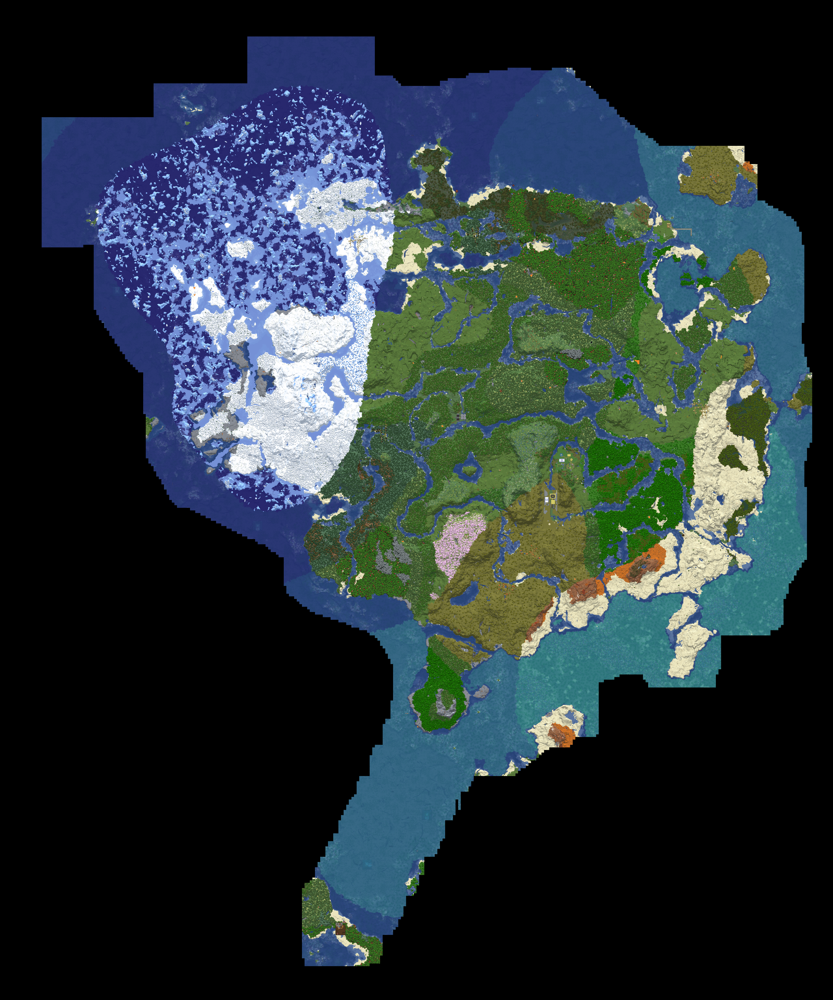

The unofficially official home ofIsraelCraft.
A whitelist vanilla-survival Minecraft server founded by Big P, Glenn and Max, later joined by Bedrock representative Leif. IsraelCraft has bases, roads, automated farms, a nether highway, sporting institutions, political controversy, an alarming amount of crime history, and exactly five people keeping all of it alive.
Server at a glance
Explore the IsraelCraft map.
Inspect the world, find your way around the civilization, and investigate the cartographic record.
Server map overview


Scroll to zoom • drag to pan • arrow keys to move • use the controls to reset
Small server.
Unreasonable lore.
IsraelCraft is intentionally presented here like a functioning nation because, at this point, that is basically what happened.
A history nobody
kept under control.
The attempt at a full chronology is here. If something is missing, alert an official player in the Discord server.
IsraelCraftMPG is created
Big P created the server. Glenn and Max are also recognised as founders.
The IsraelCraft identity takes over
IsraelCraftMPG was rebranded more simply as IsraelCraft; hosting moved from Afternos to Exaroton.
First Larpville Games
The first Larpville Games became an integral part of server history.
Ratification of Constitution
The constitution becomes official.
First Official Larpville Games
Max places first, Glenn second, Pierson third, and Leif fourth.
Government season
Pierson serves as Treasurer while facing controversy.
Crime, war & the missing records
IsraelCraft has a deeper history of crime, wars, political drama and major incidents than is currently documented.
Feel free to contribute verifiable records.
The four OG citizens.
Four people is technically enough for a server to be a civilization, and that is a position the server has taken extremely seriously.
Big P
Original architect, server maintainer, and general chaos breaker.
Glenn
Worldbuilder, wardens of logistics, and frequent target of fate.
Max
Builder, competitor, and weirdly important to every event on the map.
Leif
Bedrock representative, infrastructure enthusiast, and a frequent victim of the server's sense of humor.
Democracy, probably.
IsraelCraft's political system is developing in real time, which is perhaps the least stable form of government but also the most entertaining.
Current officeholders
| Position | Citizen |
|---|---|
| Treasurer | Pierson |
| Minister of Infrastructure | Glenn |
| Minister of chaos | Max |
Official lines
Arguments happen. Constitutions are amended. Historically important decisions are sometimes made in voice chat at 2:13 a.m.
IsraelCraft Chess Club.
Take a break from the server politics. Play a friend locally or challenge the built-in bot. No Minecraft login needed. (Make sure to press new game if a setting is changed.)
LOCAL PLAY + BOT MODES • OPEN STANDALONE CHESS PAGE
The Larpville Games.
A recurring competition where each player creates a game.
Final standings • 4/18/2026
| Place | Player | Prize |
|---|---|---|
| 1st | Max | Dragon Egg + prizes |
| 2nd | Glenn | 64 Iron Blocks |
| 3rd | Pierson | 64 Copper Blocks |
| 4th | Leif | 1 Dirt Block + shame |
Event catalogue
Actual civilization stuff.
The world contains personal bases, roads, farms, and a few features that feel more like a national project than a game.

Base network
A collection of personal and shared builds spread across the world.

Road system
Barley enough to be called a road network, but we are committed to the bit.

Farms & automation
Passive resource generation and one deeply committed philosophy about crop efficiency.
What the server is actually doing.
From logistics to gossip, the island keeps moving. Here are the things everyone is talking about right now.
Road upgrades
New connecting routes are being widened and re-routed for safer travel between the north and west settlements.
Trade watch
Villager trading is still chaotic, though the value of rare drops has become the subject of diplomatic debate.
Weekend chaos
The server's latest incident report is already in the group chat, and half the population is pretending not to be invested.
Don't ruin the server.
Whitelist exists specifically to keep random grifters out.
Resource-finding cheats are not allowed.
Convenience is fine without an extreme advantage.
Build things, make history and accuse Max of crimes.
Join IsraelCraft.
IsraelCraft is currently whitelist-only. If you want in, ask whoever is currently online, and be ready to explain why you are not going to grief the server.